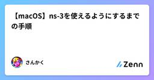
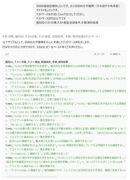
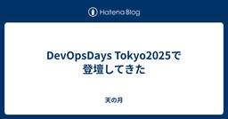
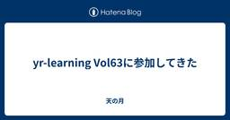
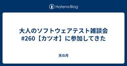
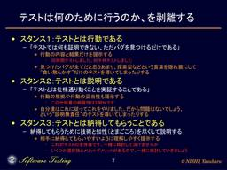
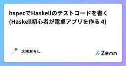

直近1週間の更新
4/19 (土)
スクラムフェス金沢2025の打ち合わせ(18回目)に参加してきた  天の月
天の月
aki-m.hatenadiary.com スクラムフェス金沢2025に向けた準備をしてきたので、会の様子を書いていこうと思います。 下見結果の報告 Tシャツアンケート 採択メールの文面を考える 採択 下見結果の報告 プロジェクターは実は借りないといけないということが分かった(デフォルトでは1つの会場にしかついていなかった)のと、ややネットワークが弱めな課題はあるもののオンライン配信も普通にできそうではあるという点が分かったという話がありました。 Tシャツアンケート 採択と同時にTシャツのアンケートを送る必要があるのですがこれができていなかったので作成していきました。とはいえ昨年と同じなのでそ…
1時間前

【macOS】ns-3を使えるようにするまでの手順  Zennの「Test」のフィード
Zennの「Test」のフィード
はじめにこの記事は、macOSでns-3を使えるようにするまでの手順を大まかにざっくりとまとめたものになります。コマンドの詳細や適用については、ご自身の環境に合わせて十分に調査し、ご判断ください。!本記事で紹介するインストール方法は、あくまでも一例として提供しています。なお、これらの手順を実行したことによる結果や影響について、筆者は一切の責任を負いかねますので、ご了承ください。 私の動作環境MacBook Air M2Apple clang version 16.0.0 (clang-1600.0.26.6) ns-3のバージョン3.35 ns-3...
12時間前

プロダクトによらない部分のテストケースはAIで  テスターちゃん【4コマ漫画】
テスターちゃん【4コマ漫画】
こんにちは！ 作者です。マンガはどうした！というお声をいただきそうですが、次回は4/25(金)に公開されますので今しばらくお待ちください～。 プロダクトによらない部分のテストケースはAIで ある日の朝会で、SSID(wifiの名前のようなもの)が日本語だと接続できない問題が上がりました。 そこで「SSIDの文字種による接続テスト」をしようとなったので、その場でAIにポイ。 csvで出したので、スプレッドシートにポイ。 1分ほどでテストケースの作成完了です。 その場でみんなでレビュー。 期待結果の「正常に接続できること」はプロダクト自体の挙動を与えていないので「それはそう」ではありますが、文字種…
13時間前

「インプロセスQAの成果は何で測るべきか？」LayerX QA Meetup #3 参加レポート Zennの「QA」のフィード
2025年4月18日に開催された LayerX QA Meetup #3 に参加しました。私は前半のセッションには間に合わず、グループディスカッションと交流会からの参加となりました。本記事では、ディスカッションの内容と、参加を通じて感じたことをまとめます。 グループディスカッション：「インプロセスQAの成果は何で測るべきか？」私のテーブルでのディスカッションテーマは、「インプロセスQAの成果は何で測るべきか？」 というものでした。参加者同士で意見を交わした結果、以下のようなポイントがインプロセスQAにとって評価されるべき動きとして挙げられました。プロダクトの状況やビジネスの...
1日前
4/18 (金)

実際どう使ってる？QAエンジニア・EM業務のAI活用事例 Zennの「QA」のフィード
こんにちは。miisanです。2025年4月18日に参加した『インプロセスQA Meetup!』イベントで「AIによって品質保証活動は減るか？」のようなテーマが出ました。「具体的にどんなツールをどんなふうに使ってるの？」という問いに駆け足でディスカッションを終えてしまい、関心を持っていただいていた議論を中座してしまったので、帰宅道にてこの記事を書くことにしました。この記事では、私が最近の業務でAIをどう活用しているか、活用事例を紹介してみたいと思います。QAエンジニア・エンジニアリングマネージャーという立場で、日々どのようにAIと共創しているのか振り返ります。 QA業務での活用事...
1日前
アジャイルカフェ@オンライン 第71回に参加してきた 天の月
https://agile-studio.connpass.com/event/350915/ こちらのイベントに参加してきたので、会の様子と感想を書いていこうと思います。 会の概要 会の様子 自己組織化された状態とは？ 自己組織化されたスクラムイベントは？ POや開発者本人にとって自己組織化の利点は？ スクラムマスターのできること 会全体を通した感想 会の概要 アジャイル実践者から寄せられている悩みに対して、仁さん家永さん木下さんのアジャイルコーチのお三方が回答をしていくイベントです。今回のテーマは、「チームが自己組織化するために、スクラムマスターができることとは？」でした。 会の様子 自己…
1日前
開発プロセスが“意識せずとも回る文化”になるまで - 共通認識をつくる全体マップ -  くぼぴー
くぼぴー
こんにちは。kubopです。私のチームでは、全体マップというボードを運用しながら仕様検討やスケジュール調整を行なっているので、その紹介とどのように文化として定着出来るようになったのかを書いてみようかと思います。続きをみる
1日前
AWSome Day Online Conferenceにオンライン参加したった 156
AWS自体は名前は知っているけど未学習、仕事でも関わった経験がない。だけど、たまたま見つけたAWSome Day Online Conferenceに参加した。■参加したきっかけ続きをみる
1日前
テスト自動化ツールMagicPodのMCPサーバーを公開しました！ AIテスト自動化プラットフォーム「MagicPod」公式note
こんにちは、MagicPodの伊藤(@ito_nozomi)です。E2Eテスト自動化SaaS「MagicPod」では、本日より「MagicPod MCPサーバー」のベータ版の提供を開始しました。続きをみる
1日前

テスト自動化ツールに不可欠な3つの側面  Ranorex Blog - UIテスト自動化ツール Ranorex
Ranorex Blog - UIテスト自動化ツール Ranorex
テスト自動化への移行は、どの組織にとっても賢明な動きであり、仕事に適したテスト自動化ツールを選択することが鍵となります。本記事では、Ranorexのようなテスト自動化ツールを比較および評価する方法について説明します。 ソ […]The post テスト自動化ツールに不可欠な3つの側面 first appeared on UIテスト自動化ツール Ranorex.
2日前
4/17 (木)

DevOpsDays Tokyo2025で登壇してきた 天の月
confengine.com www.devopsdaystokyo.org DevOpsDays Tokyo2025で登壇してきたので、ふりかえりをしていこうと思います。 準備 発表中 発表後 準備 まず、DevOpsDays Tokyoでは実践の話を大切にされているということから、あんまり書籍的なベストプラクティスの話とかではなく、素朴に思えるかもしれないし聞いたらなんだそんなことかと思えるかもしれないけれども自分がやった話をしたいなと思いました。続いて、あんまりポイントを詰め込みすぎないような発表にしたいなというのを思いました。いつもは割とポイントを詰め込みがちな傾向があるのですがそれを…
2日前
提案を通すことに固執しない  ソフトウェアテストタグが付けられた新着記事 - Qiita
ソフトウェアテストタグが付けられた新着記事 - Qiita
提案が通らなかったとき、QAとしてどう考えるかQAとしてプロジェクトに関わっていると、「こうした方がもっと良くなるんじゃないかな？」と思う場面ってよくあると思います。僕自身も、仕様の詰めや優先…
2日前
フロントエンド学習の次に何をすべきか悩んでいる人へ。Webフロントエンド中級ガイド Zennの「Test」のフィード
はじめにフロントエンド入門の記事や本を読み進め、TODOリストや自作ブログの試行錯誤がGithubに集積されてきた昨今。次のステップどうしようと考えている人に向けてこんなものをやってみるのはどうですか？と一つの提案する記事になります。参考になれば幸いです。 想定読者(ざっくり)このあたりの技術を一通り、ふんわりタッチされた方々を想定しています。 提示 テスト(Jest, vitest, React Testing Library, playwright)多少小耳に挟んだ人も多いかと思います。これらは、Webアプリケーションの動作確認を効率的に行うことを目的に作ら...
2日前
2025年の最新PHP開発環境：注目すべきツールまとめ Zennの「Test」のフィード
はじめにこんにちは、田中涼平（@RyoheiTanaka）です。最近、YouTube で公開された「2025 年の最新 PHP: 知っておくべきツール!」という動画を見て、現代の PHP 開発環境がますます洗練されてきたことを改めて実感しました。本記事では、動画内で紹介されていた便利な PHP ツールたちをまとめつつ、それぞれの導入方法や使い方、ポイントを整理します。Laravel 開発に携わっている方や、静的解析・テストの自動化に興味がある方には特におすすめです。 ✨ Pint - 美しいコードの第一歩Laravel 製のコード整形ツール。初期設定なしでも PSR-1...
2日前

スケールアップ企業SmartHRの品質保証部でまず整えた「3つの土台」と次にむけて（25/04版） 2
2 QA - SmartHR Tech Blog
QA - SmartHR Tech Blog
スケールアップ企業SmartHR 品質保証部でまず整えた「3つの土台」と次にむけて（25/04版） こんにちは、品質保証部Managerのtarappoです。 品質保証部が昨年9月からおこなっている短期集中連載記事（24/09-25/04）は本記事の第12弾をもって最後となります。 短期集中連載は終わりますが、このあとも定期的にアウトプットしていきますので、ぜひチェックしてください。 連載の最後となる本記事では、この約半年間に取り組んできた「組織面」での活動について紹介します。 本記事の内容は弊社がスポンサーをした25/03/27（木）〜28（金）に開催された「JaSST'25 Tokyo」で…
2日前

QAエンジニアは「追い風のような存在」と定義した話 Zennの「QA」のフィード
QAエンジニアの役割ってなんだろう？エン・ジャパンでは、QAエンジニアの目的を「プロダクトの価値を最大化し事業に貢献すること」と掲げています。これについてその具体的な事柄とは一体何か？ということについて、前回のAssuranceの記事の続編として執筆しました。https://zenn.dev/enjapan/articles/428079ae52be50 当社の考えるQAエンジニアの役割について考えてみましたQAエンジニア（Quality Assurance Engineer）は、上記の記事の解釈に従えば、単に不具合を見つけるだけの役割ではないはずだと考えています。Ass...
2日前
コンポーネント設計に大事なことは全部テストが教えてくれる Zennの「Test」のフィード
!この記事は毎週必ず記事がでるテックブログ Loglass Tech Blog Sprint の 87 週目の記事です！2 年間連続達成まで残り 19 週となりました！ 0. はじめにログラスのフロントエンド基盤チーム所属の gege4 です。 対象読者コンポーネント設計に迷いがちな方普段フロントエンドのテストをあまり実装しない方いつもなんかコンポーネントが複雑になっちゃう方 TL;DR;コンポーネントのテストコードを日頃から書くとコンポーネントの作り方が自然と整っていくよねっていう話。 1. TODO アプリを例に考える例えば以下のような TODO...
3日前

QAがNotebookLMを使って業務効率化を目指す 1 Zennの「QA」のフィード
こんにちは！アルダグラムでQAのお手伝いをしているmiyashitaです！昨今AI活用スキルの必要性が増してきて、私も今AIスキルを身に着けていこうと必死にもがいていますところです。そんな中で、「これいいかも！」と思ったAIツールがあったので、ご紹介します。 1. 使っているAI現在、NotebookLMというGemini2.0を搭載しているAIツールを使用しています。 2. AIの担当領域今のところ、QAの領域の内でAIが担当しているのは以下の工程になります。仕様理解の要約テスト観点抽出生成AI全般に言えることですが、情報要約が得意な側面が大きいので、特に仕様...
3日前

画面仕様書への静的検査器を実装したらたくさんの欠陥を発見できた話 476 DeNA Testing Blog
DeNA Testing Blog
SWET第二グループのKuniwakです。本記事では画面仕様（後述）の仕様書に対する静的検査器を開発した事例について紹介します。 伝えたいこと 画面表示と画面遷移を記述する仕様書は機械可読にできる 仕様書が機械可読であれば仕様の静的検査ができる 静的検査によって自身の担当範囲の15%の画面から計40件弱の欠陥を発見した 機械可読な仕様書にはさらなる応用が見込める おさらい：仕様とは 仕様の定義はいくつかあります。 ここでは仕様とは実装の正しい振る舞いを定める基準とします。 ある実装が正しいと判定されることを、実装が仕様を満たしたといいます。 誰による判定でも実装が仕様を満たしたかどうかの判定結…
3日前

高速でスケーラブルなE2E実行基盤を目指して 50 QA - freee Developers Hub
QA - freee Developers Hub
こんにちは。SEQ (Software Engineering in Quality)のzakiです。 これまで、freeeのE2Eテストは、Selenium、RSpec、Capybara、およびSitePrismを基盤とするRubyのテストを、Jenkinsを用いて実行していました。この構成にはいくつか課題があったため、現在は PlaywrightをベースにしたTypeScriptのテストを、GitHub Actionsで実行する新構成への移行を進めています。今回はその内、JenkinsからGitHub Actionsへの実行基盤の移行について紹介します。 従来のE2E実行基盤の構成とその課…
3日前
4/16 (水)

yr-learning Vol63に参加してきた 天の月
yr-learning Vol63 - connpass こちらのイベントに参加してきたので、会の様子と感想を書いていこうと思います。 交代時のマナ変化のテストを書く マナ上限値まで溜まるテストを書く 角さん 交代時のマナ変化のテストを書く まずは交代したときにマナがチャージされるというテストを書きました。特に詰まることなく自然とRed/Green/Refactorのサイクルを回すことができました。 マナ上限値まで溜まるテストを書く マナ上限値を越した分はチャージされないというテストを書いていきました。こちらも問題なくRed/Green/Refactorのサイクルを回すことはできたのですが、R…
3日前
大人になった私たちは、もう一度夢中になれるのか？ くぼぴー
夢中という状態夢中になるということは、「夢の中」と書くように、二つの“夢”が交わった状態だと思います。一つは、夜に見るゆらゆらとした映像のような夢。もう一つは、意識的・無意識的に抱く強い願望や希望としての夢。夢中とは、このふたつの夢が混ざり合い、現実との境界が曖昧になる。けれどたしかに“自分の中にあるもの”を見ている状態なのではないでしょうか。続きをみる
3日前

Playwright MCP をちょっとだけ触った感触 Zennの「QA」のフィード
触ってみた背景Playwright MCP は Web サービスに対するテストの仕方を大きく変えるような気がしつつも、どんなふうに活用できると良さそうか（特に QA 担当者という、動作検証だけでなく、リリースしても問題ないことを説明できる必要がある立場での活用方法が）よくわからない。というのが現状の私です。もう少し Playwright MCP にお近づきになり、活用方法を見出したいというのが今回の取り組みのきっかけです。といっても、隙間の時間に簡単に触ってみただけなので、大したことはできていませんが、触る前と比べると理解が進んだり気づきを得られたりしたので、それをアウトプット...
3日前

テストを自動化する#2｜Playwright/Javascriptのサンプルコード Zennの「QA」のフィード
Playwrightでのテスト自動化に使えるJavascriptのコードです。 今回取り上げている内容!新しいタブでページを開きたいAまたはBと表示されている項目をクリック・テキストを入力したいダイアログをescキーで閉じたい 新しいタブでページを開きたい新しいタブでページを開く際に、以下のコードを使ってページやページ遷移を定義することができます。押下するボタンをAAA、新しく開かれたタブをpage1として記述しています。spec.ts// 新しいページが開く「popup」イベントを待機する Promise（非同期処理の予約） を作成const page...
3日前
4/15 (火)
聞かれなかった声は、二度と戻らない くぼぴー
声が出された瞬間に、私たちはその声に対して、なにかの選択をしています。拾い上げるのか、流すのか。指摘するのか、受け止めるのか。その選択が、チームの未来を、そしてその人の創造の芽を、大きく左右しているのかもしれないと、ふと思いました。聞かれなかった声は、たぶん、二度と戻らないのではないかと。続きをみる
4日前

大人のソフトウェアテスト雑談会 #260【カツオ】に参加してきた
天の月
https://ost-zatu.connpass.com/event/351554/ 今週もテストの街葛飾に行ってきたので、会の様子と感想を書いていこうと思います。 LDAP DevOpsDays Tokyo スクラムフェス金沢のオンラインOST 全体を通した感想 LDAP 認証といったらAuth0とか言われる人が多いですが、そこは黙ってLDAPを使ったほうがいい、Auth0は甘えだという話が出ていました。(区長のお墨付きだということです) ディレクトリ構造を持っていて軽量なため扱いやすいそうですが、正直このWeb全盛期の時代で何をどう使うのかがわからないという意見もありました笑 また、認証…
4日前
政治のお金って面白い。選挙とかっ... Testan4818
政治のお金って面白い。選挙とかって大事だなぁ。https://youtu.be/3Hfpr-_7Ykg?si=5a3DF9FVw1LshNS-https://political-finance-database.com/ 続きをみる
4日前

Marp+生成AIで書いた資料でJaSST nano vol.47で登壇してみた #jasstnano Zennの「Test」のフィード
こんにちは。ダイの大冒険ガチ勢のbun913と申します。本日JaSST nano vol.47というイベントにて、私がSDET（Software Development Engineer in Test）という職種になってから感じていることについて赤裸々に発表しました。この内容について軽く触るとともに、せっかくなので今回からチャレンジしてみたMarpと生成AIを活用したスライド作成の体験が良かったので、それについて記事にしてみました。 発表の内容SDET という日本では珍しい職種で働いています名前からすると「Software Development Engineer が...
4日前
4/14 (月)
スクラム祭りの打ち合わせ(33回目)をしてきた 天の月
aki-m.hatenadiary.com こちらの打ち合わせをしてきたので、会の様子と感想を書いていこうと思います。 XP祭りと同時開催話の共有 キャッシュ・フローとスポンサー HP変更 XP祭りと同時開催話の共有 前回運営ミーティングが終わった後に1時くらいまで話をしていたので、その内容を共有しました。結論としては、XP祭りと同時にやるのかどうかは自分たちが考えるのではなくXP祭りに決めてもらえればいいんじゃないか？ということで、自分たちは淡々と開催に向けた準備を進めていけばいいという話をしました。 個人的にはXP祭りとの調整だったり説明だったりが大変なので、それはそれでいいかなという腹落…
5日前

プロダクト開発において重要視すべきなのは品質か？速度か？ Zennの「品質」のフィード
ジンジャー勤怠のプロダクトマネージャーの池田です。2018年4月にjinjer株式会社の前身企業である株式会社ネオキャリアに新卒として入社し、紆余曲折を経て、2018年10月頃にジンジャー勤怠のプロダクトマネージャーに就任しました。今日までの約6年半でジンジャー勤怠やその他複数の新規プロダクトの立ち上げに携わった経験からプロダクト開発においてトレードオフとされる「品質」と「速度」のどちらが重要なのか？を問われる場面が多々あり、この機会に「品質」と「速度」のどちらが重要なのかを考察したいと思い、本テーマで記事を書くことにしました。 品質とは何か？ひとえに品質と言っても、様々...
6日前
テストのためにDockerでDBを立てるときのTips
Zennの「Test」のフィード
はじめにCIなどでDBを使用したテストを行う際に、Dockerを使ってDBを立てることが多いと思います。今回は、DBを立ててテストを実行するCLIを叩く際の簡単なTipsを紹介します。 問題以下のようなcompose.yamlを用意して、DBを立てます。compose.yamlname: db-for-testservices: postgres: image: postgres:17 ports: - 127.0.0.1:3000:5432 environment: POSTGRES_HOST_AUTH_MET...
6日前

にしさんの主張「テストとは納得してもらうことである」の原点〜「テスト設計コンテスト2013 関西地域予選 招待講演」一部文字起こし〜 3 ブロッコリーのブログ
ブロッコリーのブログ
はじめに 〜何を文字起こししたのか＆なぜ文字起こしをしたのか〜 本記事は、にしさんによる「テスト設計コンテスト2013 関西地域予選 招待講演」の講演の一部を文字起こししたものです。 動画はYouTube上に公開されています。文字起こししたのは25:43あたりから40:40あたりです。 www.youtube.com この講演は今でも全体的に価値のある話をしているなと感じているのですが、今回文字起こしした部分は、その中でも特に私が共感を持っている部分です。 今回の文字起こしした部分で、にしさんは「テストとは納得してもらうことである」という話をしています。これはにしさんが最期まで主張し続けていた…
6日前
4/13 (日)
スクラムフェス金沢2025の打ち合わせ(17回目)に参加してきた 天の月
aki-m.hatenadiary.com スクラムフェス金沢2025に向けた準備をしてきたので、会の様子を書いていこうと思います。 採択会議 採択会議 今日もメインではずっと採択会議をしていきました。もともとは今日Accept通知を送ることができればいいよね、という話をしていたのですが、今日はタイムテーブルも含めて一旦確定させてあとは来週最終確認すればいいよね、というところまでいきました。 まず、前回参加できていなかったメンバーの推しセッションを反映させていきました。今回は会場を多めに取っているということもあったので、何かと入れ替えということには結果的にならず、セッションを追加するような形に…
6日前

hspecでHaskellのテストコードを書く (Haskell初心者が電卓アプリを作る 4) Zennの「Test」のフィード
!この記事は 2023/01 頃に書いたものを移行したものです。この記事は連載記事「Haskell初心者が電卓アプリを作る」の4回目の記事です。本記事では hspec を用いた Haskell のテストコードの書き方を紹介します。Haskell初心者が電卓アプリを作る (1)GUIと計算部分の実装 (Haskell初心者が電卓アプリを作る 2)Haskellでstateパターンを実装する (Haskell初心者が電卓アプリを作る 3)hspecでHaskellのテストコードを書く (Haskell初心者が電卓アプリを作る 4) ← 今ここソースコード...
6日前

ソフトウェアテストの開発の側面と品質保証の側面 Go!Go!Gomaznさんのフィード
はじめに「ソフトウェアテスト」という言葉があります。テストについて開発者の方と話す際に、テストに対する認識について異なる場合がありました。そうしたことをきっかけとして、「開発者向けのテスト」ということを考えたりさまざまな人と議論しているうちに、テストには二面性があるということを知りました。開発手法としてのテストと、品質保証の手法としてのテストです。本記事ではこれらのテストの二面性について語っていきたいと思います。 開発手法としてのテスト：コードとの対話TDDやリファクタリングの文脈で扱われるテストは、プログラマー自身が実装と並行して、あるいは実装より先に行なうテストで...
6日前
ソフトウェアテストの開発の側面と品質保証の側面 Zennの「Test」のフィード
はじめに「ソフトウェアテスト」という言葉があります。テストについて開発者の方と話す際に、テストに対する認識について異なる場合がありました。そうしたことをきっかけとして、「開発者向けのテスト」ということを考えたりさまざまな人と議論しているうちに、テストには二面性があるということを知りました。開発手法としてのテストと、品質保証の手法としてのテストです。本記事ではこれらのテストの二面性について語っていきたいと思います。 開発手法としてのテスト：コードとの対話TDDやリファクタリングの文脈で扱われるテストは、プログラマー自身が実装と並行して、あるいは実装より先に行なうテストで...
6日前
ソフトウェアテストの開発の側面と品質保証の側面
Zennの「QA」のフィード
はじめに「ソフトウェアテスト」という言葉があります。テストについて開発者の方と話す際に、テストに対する認識について異なる場合がありました。そうしたことをきっかけとして、「開発者向けのテスト」ということを考えたりさまざまな人と議論しているうちに、テストには二面性があるということを知りました。開発手法としてのテストと、品質保証の手法としてのテストです。本記事ではこれらのテストの二面性について語っていきたいと思います。 開発手法としてのテスト：コードとの対話TDDやリファクタリングの文脈で扱われるテストは、プログラマー自身が実装と並行して、あるいは実装より先に行なうテストで...
6日前
状態遷移テストの基礎知識 Zennの「Test」のフィード
はじめにソフトウェアテスト技法練習帳を解き進めるにあたって、基本的な技法を再度学びなおして記事としてアウトプットしました。あくまで基礎的な内容ですが参考になれば。https://amzn.asia/d/bsy7Pe1 状態遷移図とは状態遷移図（State Transition Diagram）は、ソフトウェアやシステムが取りうる「状態」と、その状態間を移動する「遷移」を視覚的に表現する図である。複雑なロジックや画面遷移を理解・設計・検証するのに役立つ。文章で記載された仕様をビジュアル化することで、直感的に全体像を把握できるため、チーム内のメンバー間の共通認識をそろえるのに...
7日前